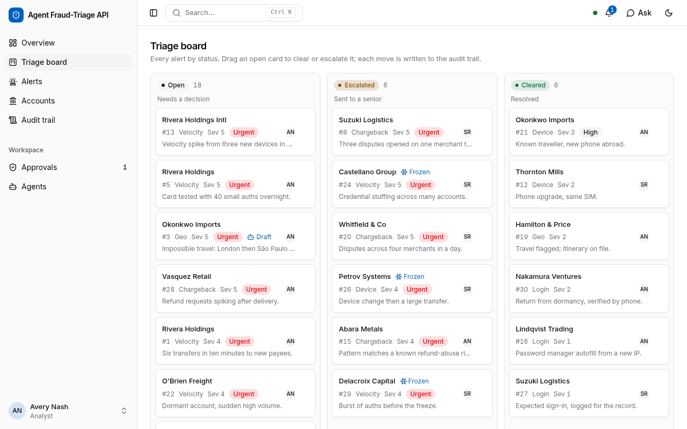
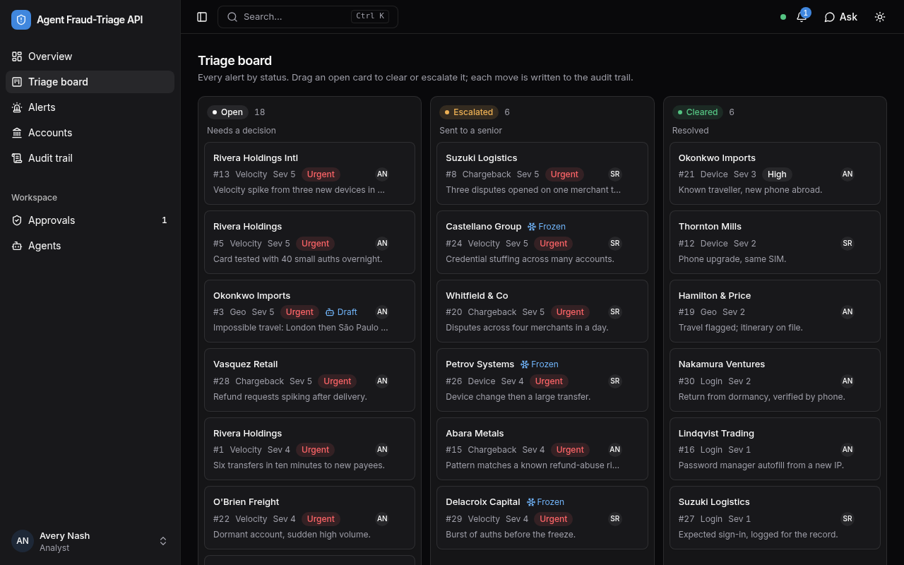

One governed Xano API a fraud team's analysts and their AI agents both call, where the same authority rules decide every action and one audit trail records every attempt, allowed or refused.


A fraud analyst and the analyst's AI agent hit the same permissioned, logged endpoints. Clearing and escalating an alert is in scope for both. Freezing an account is senior-only, so an analyst (and the analyst's agent) is refused at the API layer with the deciding rule, and the refusal is written to the audit trail just like an allowed action. The rule that matters lives once, in one function both the person and the agent run through.
git clone https://github.com/xano-scratch/agent-fraud-triage-api
cd agent-fraud-triage-api
npm install
npm run xano:deploy # deploys and seeds the backend on the Xano Engine, no account
npm run dev # opens the app, pointed at itFor a cloud link that works with ChatGPT and Claude: npx xanosdk login once, then npm run xano:deploy:ephemeral.
Paste this to a coding agent (Claude Code, Cursor, Codex, Windsurf):
Clone https://github.com/xano-scratch/agent-fraud-triage-api, run npm install
and npm run xano:deploy, then npm run dev. Sign in as the analyst, open Agents,
create a read-and-write key, and connect to the MCP server. Triage the open
fraud queue: list the open alerts, and for the high-severity ones draft a clear
or escalate for me to approve. Everything an agent tries is written to the
audit trail.| Role | Can | Cannot |
|---|---|---|
analyst | Triage alerts, add findings, read the audit trail, recommend a freeze | Freeze or unfreeze accounts, manage the team |
senior | Everything an analyst can, plus freeze and unfreeze accounts, edit risk notes, manage the team | Not restricted |
| Verb and path | Who may call it | What it enforces |
|---|---|---|
GET api:alerts | alerts.triage | The queue; filters and paging, severity first |
GET api:alerts/{id} | alerts.triage | One alert with account, findings, audit |
POST api:alerts/{id}/act | alerts.triage | Clear or escalate an open alert; audited |
POST api:alerts/{id}/findings | alerts.triage | Add a finding; audited |
POST api:accounts/{id}/freeze | attempt: any triager | Requires accounts.freeze; a refusal is audited |
POST api:accounts/{id}/unfreeze | attempt: any triager | The senior-only reverse, same rule path |
GET api:audit | audit.read | Every attempt, allowed or refused, with the rule |
| Tool | Does | Asks first? |
|---|---|---|
list_open_alerts | The open queue, most severe first (read) | no |
get_alert | One alert with account and findings (read) | no |
search_accounts | Find an account by holder or number (read) | no |
triage_alert | Drafts a clear or escalate | yes, the analyst |
add_finding | Adds a finding, logged as an agent action | no |
recommend_freeze | Drafts a freeze recommendation | yes, a senior |